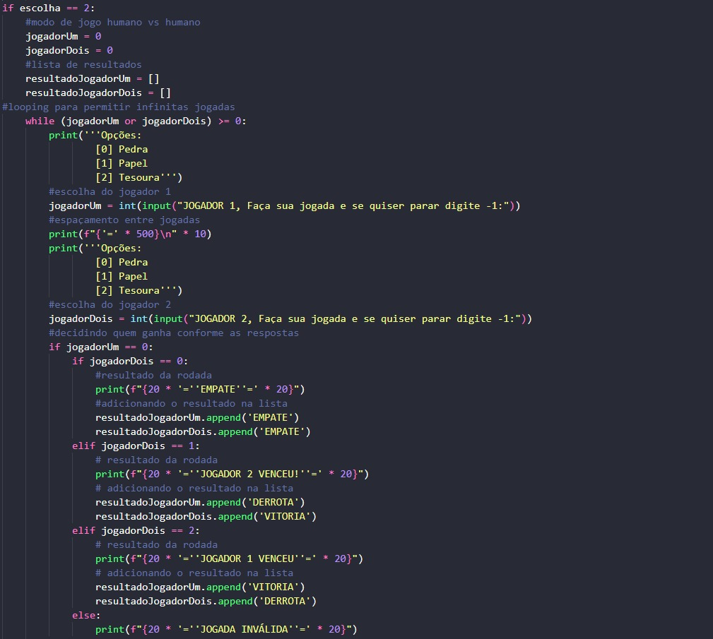

Raciocinio algoritmico
foi uma matéria que pude aprender mais sobre lógica de programação e também pude desenvolver minhas habilidades como programador.
Os principais trabalhos realizados nessa matéria foram esses:
Calculo IMC
Esse foi um dois primeiros trabalhos e que nos ensina o básico dos ifs, elifs, e else
Jokenpô
esse foi o primeiro trabalho com mais de 100 linhas que fizemos, nele eu pude trabalhar com tratamento de erros e uso mais complexo de condições. Além de poder trabalhar com listas

quinto TDE
Nesse TDE eu pude trabalhar com matrizes e implementei funçoes para facilitar a correção
Batalha Naval
Sem dúvidas o trabalho colaborativo que eu mais aprendi, nele são usadas estruturas complexas de for, matrizes, e em outras versões cheguei a utilizar classes.
Além disso usamos threading, colorama, biblioteca re e muito tratamento de erro. O código ficou com 600 linhas, por isso não posso mostrar ele inteiro.
Download batalha naval (RAR)
Sistemas ciberfísicos
foi uma matéria que pude aprender sobre tecnologias implementadas em sistemas embarcados, calculo binário, arquitetura de computadores, arduíno, e portas lógicas.
Os principais trabalhos realizados nessa matéria foram esses:
Troca de bases
primeiro contato com troca de Bases
Calculo binários
operações binárias de subtração e adição
Portas lógicas
primeiro contato com portas lógicas

Arquitetura de computadores
Arduíno
Primeiro contato com Arduíno
Resolução de problemas com lógica matemática
Foi uma matéria muito importante para melhorar minha lógica de programação, e vai muito além do raciocinio matematico
Os principais trabalhos realizados nessa matéria foram esses:
introdução a lógica matemática
Operadores lógicos
Manipulação sintática
Silogismo e Inferência
Jogo tabela verdade
Filosofia
foi uma matéria que a maioria das apresentações foram em sala, mas foi de grande importancia para o meu desenvolvimento acadêmico
Os principais trabalhos realizados nessa matéria foram esses:
Razões para estudar
Analise do futuro das IAs
Experiência criativa
foi uma matéria de produção em grupo, onde aprendemos a colaborar e trabalhar em equipe
Os principais trabalhos realizados nessa matéria foram esses:
Jogo Construct
Foi o primeiro projeto, foi muito desafiador por conta das limitações do construct,
mas ao mesmo tempo foi muito construtivo para o desenvolvimento do trabalho em equipe
Site Processing
Foi mais um trabalho em equipe, mas esse não tinha limitações e minha equipe desenvolveu o site bem. Fizemos um site informativo para
crianças que visa conscientizar sobre a situação da reciclagem no Brasil, e por meio de um vídeo e um jogo dentro do proprio site a criança pode interagir
e se envolver mais com o tema